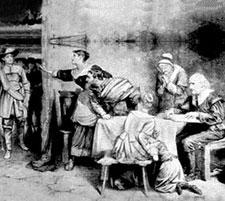

| Rolling
hills and farmer’s fields, in summer the land is cool,
the air scented with yellow flowers, a sweet
unplaceable scent that is whirled by salt spray and breezes across
the farms from the gorse hedgerows at the coast. I
see shadows
of the
Covenanters
at their secret meetings in the glens, where she points and
instructs. No simple farmer's fields, these, but the land of
Scottish outlaws, John Knox's children, poor folk and rich, who
believed
in their Scottish Kirk. Remembered now not because of their piety
but because the Kirk and the
Covenant stood
for Scottish freedom – from French Catholicism and
English Kings. A great irony: in late twentieth century
secular Scotland, my Grandmother found company and solace in
a community
of Catholic Poles, attended mass
for many years; she remained a Protestant, identity as a badge
of memory I think, this is who I am. At her funeral
the Polish priest led a blessing and we sang hymns from
the Church of Scotland hymnal.
|
“The strongest
and most extreme forms of Covenanting were to be found in
Ayrshire and the south west in
Dumfries and Galloway where dissenting ministers had substantial
congregations. Their resistance took the form of guerilla
tactics and attendance at open air meetings or conventicles.
They were harried by the government suspicious of treason,
and by heavy handed
military, and judicial reprisals, especially after 1681.”
...say the textbooks.
|
 |
It must have been cold
and wet, I used to think, sitting out in those fields, even in summer,
though the sound of the larks
always sparks in me a nostalgia
for an imagined time long past when belief was strong and
simple. Tam O’Shanter gallops by on the horizon,
cloak flying, glancing fearfully over his shoulder as the devil’s
witches chase close behind.
|